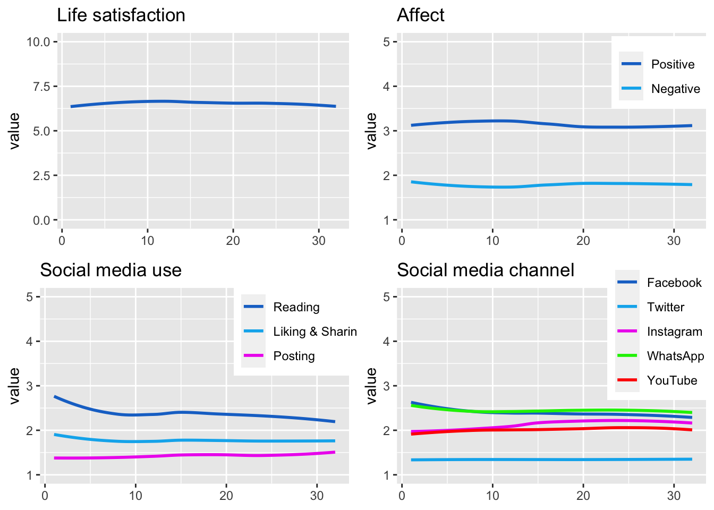
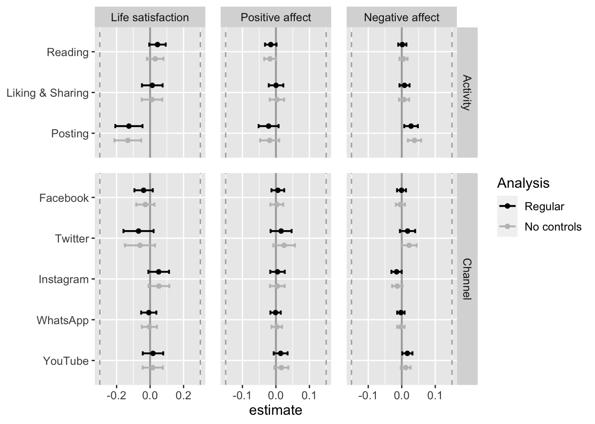
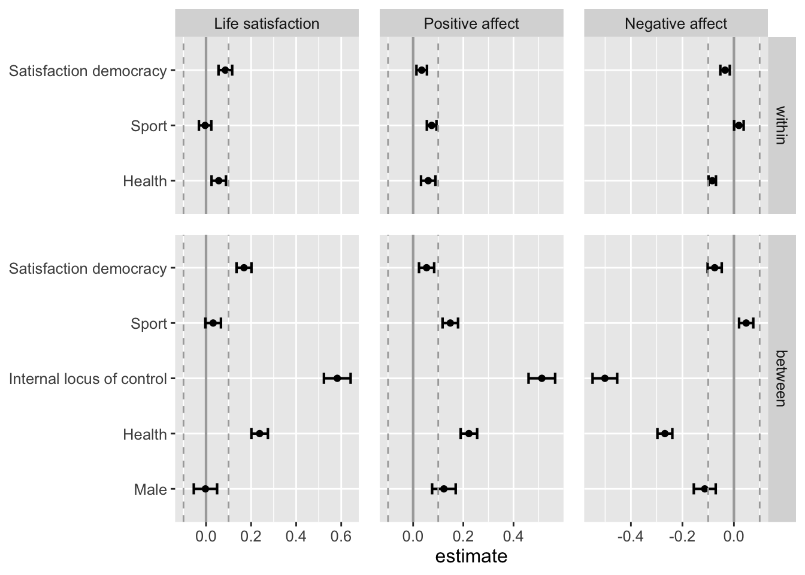

Load packages.
# install packages
# devtools::install_github("https://github.com/tdienlin/td@v.0.0.2.5")
# define packages
packages <- c("broom.mixed", "brms", "devtools", "GGally", "ggplot2",
"gridExtra", "kableExtra", "knitr", "lavaan", "lme4",
"magrittr", "mice", #"mvnormalTest",
"PerFit", "psych", "quanteda.textstats", "semTools", "tidyverse")
# load packages
lapply(c(packages, "td"), library, character.only = TRUE)Provide session info to make results reproducible.
sessionInfo()## R version 4.1.3 (2022-03-10)
## Platform: aarch64-apple-darwin20 (64-bit)
## Running under: macOS Monterey 12.4
##
## Matrix products: default
## BLAS: /Library/Frameworks/R.framework/Versions/4.1-arm64/Resources/lib/libRblas.0.dylib
## LAPACK: /Library/Frameworks/R.framework/Versions/4.1-arm64/Resources/lib/libRlapack.dylib
##
## locale:
## [1] en_US.UTF-8/en_US.UTF-8/en_US.UTF-8/C/en_US.UTF-8/en_US.UTF-8
##
## attached base packages:
## [1] stats4 stats graphics grDevices utils datasets methods base
##
## other attached packages:
## [1] td_0.0.1 forcats_0.5.1 stringr_1.4.0 dplyr_1.0.8 purrr_0.3.4 readr_2.1.2 tidyr_1.2.0 tibble_3.1.6 tidyverse_1.3.1 semTools_0.5-5
## [11] quanteda.textstats_0.95 psych_2.2.3 PerFit_1.4.6 mirt_1.36.1 lattice_0.20-45 ltm_1.2-0 polycor_0.8-1 msm_1.6.9 MASS_7.3-55 mice_3.14.0
## [21] magrittr_2.0.3 lme4_1.1-29 Matrix_1.4-0 lavaan_0.6-11 knitr_1.38 kableExtra_1.3.4 gridExtra_2.3 GGally_2.1.2 ggplot2_3.3.5 devtools_2.4.3
## [31] usethis_2.1.5 brms_2.16.3 Rcpp_1.0.8.3 broom.mixed_0.2.9.3
##
## loaded via a namespace (and not attached):
## [1] estimability_1.3 coda_0.19-4 stopwords_2.3 dygraphs_1.1.1.6 data.table_1.14.2 rpart_4.1.16 inline_0.3.19 RCurl_1.98-1.6 generics_0.1.2 callr_3.7.0 future_1.24.0
## [12] nsyllable_1.0.1 tzdb_0.3.0 webshot_0.5.2 xml2_1.3.3 lubridate_1.8.0 httpuv_1.6.5 StanHeaders_2.21.0-7 assertthat_0.2.1 xfun_0.30 hms_1.1.1 jquerylib_0.1.4
## [23] bayesplot_1.9.0 evaluate_0.15 promises_1.2.0.1 fansi_1.0.3 readxl_1.4.0 dbplyr_2.1.1 igraph_1.2.11 DBI_1.1.2 tmvnsim_1.0-2 htmlwidgets_1.5.4 reshape_0.8.8
## [34] tensorA_0.36.2 ellipsis_0.3.2 crosstalk_1.2.0 ks_1.13.4 backports_1.4.1 pbivnorm_0.6.0 permute_0.9-7 markdown_1.1 RcppParallel_5.1.5 vctrs_0.4.0 remotes_2.4.2
## [45] abind_1.4-5 cachem_1.0.6 withr_2.5.0 checkmate_2.0.0 emmeans_1.7.3 vegan_2.5-7 xts_0.12.1 prettyunits_1.1.1 mclust_5.4.9 mnormt_2.0.2 svglite_2.1.0
## [56] cluster_2.1.2 crayon_1.5.1 pkgconfig_2.0.3 nlme_3.1-155 pkgload_1.2.4 nnet_7.3-17 rlang_1.0.2 globals_0.14.0 lifecycle_1.0.1 miniUI_0.1.1.1 colourpicker_1.1.1
## [67] modelr_0.1.8 cellranger_1.1.0 distributional_0.3.0 rprojroot_2.0.3 matrixStats_0.61.0 loo_2.5.1 boot_1.3-28 zoo_1.8-9 reprex_2.0.1 base64enc_0.1-3 ggridges_0.5.3
## [78] processx_3.5.3 png_0.1-7 viridisLite_0.4.0 bitops_1.0-7 KernSmooth_2.23-20 parallelly_1.30.0 jpeg_0.1-9 shinystan_2.6.0 scales_1.1.1 memoise_2.0.1 plyr_1.8.7
## [89] threejs_0.3.3 compiler_4.1.3 hdrcde_3.4 rstantools_2.2.0 RColorBrewer_1.1-3 cli_3.2.0 listenv_0.8.0 pbapply_1.5-0 ps_1.6.0 Brobdingnag_1.2-7 htmlTable_2.4.0
## [100] Formula_1.2-4 mgcv_1.8-39 tidyselect_1.1.2 stringi_1.7.6 yaml_2.3.5 latticeExtra_0.6-29 bridgesampling_1.1-2 grid_4.1.3 sass_0.4.1 fastmatch_1.1-3 tools_4.1.3
## [111] parallel_4.1.3 rstudioapi_0.13 foreign_0.8-82 GPArotation_2014.11-1 quanteda_3.2.1 posterior_1.2.1 farver_2.1.0 irtoys_0.2.1 digest_0.6.29 shiny_1.7.1 pracma_2.3.8
## [122] broom_0.7.12 later_1.3.0 fda_5.5.1 httr_1.4.2 Deriv_4.1.3 colorspace_2.0-3 rvest_1.0.2 brio_1.1.3 fs_1.5.2 rainbow_3.6 splines_4.1.3
## [133] sm_2.2-5.7 expm_0.999-6 shinythemes_1.2.0 sessioninfo_1.2.2 systemfonts_1.0.4 xtable_1.8-4 jsonlite_1.8.0 nloptr_2.0.0 fds_1.8 rstan_2.21.3 dcurver_0.9.2
## [144] testthat_3.1.3 R6_2.5.1 Hmisc_4.6-0 pillar_1.7.0 htmltools_0.5.2 mime_0.12 glue_1.6.2 fastmap_1.1.0 minqa_1.2.4 DT_0.22 deSolve_1.31
## [155] codetools_0.2-18 pkgbuild_1.3.1 pcaPP_1.9-74 mvtnorm_1.1-3 furrr_0.2.3 utf8_1.2.2 bslib_0.3.1 gtools_3.9.2 shinyjs_2.1.0 survival_3.2-13 admisc_0.26
## [166] rmarkdown_2.13 desc_1.4.1 munsell_0.5.0 haven_2.4.3 reshape2_1.4.4 gtable_0.3.0Find variables in dataset.
find_var <- function(name, data = doc)(
# finds the variables names for an item for each wave
data %>%
filter(Label == name) %>%
select(Variable) %>%
unlist() %>%
set_names(sub("\\_.*", "", .))
)
# find_var <- function(name, data = doc)(
# # finds the variables names for an item for each wave
# data %>%
# filter(`Variable names (DE)` == name) %>%
# select(`VARNAME (CA)`) %>%
# unlist() %>%
# set_names(sub("\\_.*", "", .))
# )Extract characteristics from fitted lmer models.
get_specs <- function(model){
# Get mean, max, and min values
dat <- coefficients(model)$wave
specs <- data.frame(
sd = attr(VarCorr(model), "sc"),
min = min(dat),
max = max(dat),
mean = mean(dat$`(Intercept)`)
)
}Get data from fitted lmer objects for descriptives.
get_dat <- function(model){
coefficients(model)$wave %>%
tibble::rownames_to_column("wave") %>%
rename(value = "(Intercept)") %>%
mutate(wave = as.integer(.$wave),
value = as.numeric(.$value))
} Determine average reliability for measures across waves
get_rel <- function(data, waves=24){
# extract average reliability from lavaan fitted cfa with several groups
reliability(data) %>%
unlist() %>%
matrix(5, waves) %>%
as.data.frame() %>%
set_rownames(c("alpha", "omega", "omega2", "omega3", "avevar")) %>%
summarise(omega = rowMeans(.["omega",])) %>%
return()
}Make graph of variables’ development.
make_graph <- function(model, title, ll, ul, line = FALSE, labels = FALSE, lmer=TRUE, legend=TRUE){
if(isTRUE(lmer)){
dat <- get_dat(model)
} else{
dat <- model
}
graph <-
ggplot(dat, aes(wave, value, color = dimension)) +
{if(legend) theme(
legend.position = c(0.85, 0.8),
legend.title = element_blank()
)} +
{if(!legend) theme(
legend.position = "none"
)} +
theme(axis.title.x=element_blank()) +
coord_cartesian(ylim = c(ll, ul)) +
ggtitle(title) +
{if(line) geom_smooth(se = FALSE, method = 'loess')} +
# geom_point() +
scale_color_manual(values=c("dodgerblue3", "deepskyblue2", "magenta2", "green2", "red"))
graph
}Get data of lmer objects for results.
# get data
get_dat_res <- function(data_aff_neg, data_aff_pos, data_life_sat, type, analysis = NULL){
if(isTRUE(class(data_aff_neg) == "lmerModLmerTest")) {
dat_fig_results <-
broom.mixed::tidy(data_aff_neg, conf.int = T) %>%
mutate(dv = "aff_neg") %>%
rbind(
broom.mixed::tidy(data_aff_pos, conf.int = T) %>%
mutate(dv = "aff_pos")) %>%
rbind(
broom.mixed::tidy(data_life_sat, conf.int = T) %>%
mutate(dv = "life_sat"))
} else{
dat_fig_results <-
data_aff_neg %>%
mutate(dv = "aff_neg") %>%
rbind(data_aff_pos %>%
mutate(dv = "aff_pos")) %>%
rbind(data_life_sat %>%
mutate(dv = "life_sat")) %>%
rename(conf.low = `2.5 %`, conf.high = `97.5 %`)
}
dat_fig_results %<>%
mutate(
type = ifelse(grepl(".*_w\\>", .$term), "within", "between"),
iv = gsub("_(w|b)\\>", "", .$term)
) %>%
mutate(
type = factor(.$type,
levels = c("within", "between")),
dv = factor(.$dv,
levels = c("life_sat", "aff_pos", "aff_neg"),
labels = c("Life satisfaction", "Positive affect", "Negative affect")),
Analysis = analysis
) %>%
select(dv, iv, type, Analysis, estimate, conf.low, conf.high, p.value)
# select Social Media type of activity
if(type == "activity") {
dat_fig_results %<>%
filter(iv %in% c("soc_med_read", "soc_med_like_share", "soc_med_post")) %>%
mutate(
iv = factor(.$iv,
levels = c("soc_med_post", "soc_med_like_share", "soc_med_read"),
labels = c("Posting", "Liking & Sharing", "Reading"))
)
} else if(type == "channels"){
dat_fig_results %<>%
filter(iv %in% c("soc_med_fb", "soc_med_ig", "soc_med_wa", "soc_med_yt", "soc_med_tw")) %>%
mutate(iv = factor(.$iv, levels = c("soc_med_yt", "soc_med_wa", "soc_med_ig", "soc_med_tw", "soc_med_fb"), labels = c("YouTube", "WhatsApp", "Instagram", "Twitter", "Facebook")))
} else if(type == "control"){
dat_fig_results %<>%
filter(iv %in% c("male", "health", "loc_cntrl_int_m", #"employment_facPublic service",
"act_spo", "sat_dem")) %>%
mutate(iv = factor(.$iv, levels = c("male", "health", "loc_cntrl_int_m", #"employment_facPublic service",
"act_spo", "sat_dem"),
labels = c("Male", "Health", "Internal locus of control", #"Employed public service",
"Sport", "Satisfaction democracy")))
}
return(dat_fig_results)
}Make graph of effects
make_graph_res <- function(data, sesoi = NULL, legend = TRUE, facet = "comm", title = NULL){
ggplot(data, aes(x = estimate, y = iv)) +
scale_color_manual(values = c("black", "grey75", "darkcyan", "deepskyblue", "cornflowerblue", "darkcyan", "aquamarine")) +
geom_vline(xintercept = 0, lwd = .75, colour = "darkgrey") +
geom_errorbarh(aes(xmin = conf.low, xmax = conf.high, color = Analysis),
lwd = .75, height = .2, position = position_dodge(-.7)) +
geom_point(aes(color = Analysis), size = 1.5, position = position_dodge(-.7)) +
{if(isTRUE(sesoi == "est")) geom_vline(data=filter(data, dv=="Life satisfaction"), aes(xintercept=-.3), colour="darkgrey", linetype = "dashed")} +
{if(isTRUE(sesoi == "est")) geom_vline(data=filter(data, dv=="Life satisfaction"), aes(xintercept=.3), colour="darkgrey", linetype = "dashed")} +
{if(isTRUE(sesoi == "est")) geom_vline(data=filter(data, dv!="Life satisfaction"), aes(xintercept=-.15), colour="darkgrey", linetype = "dashed")} +
{if(isTRUE(sesoi == "est")) geom_vline(data=filter(data, dv!="Life satisfaction"), aes(xintercept=.15), colour="darkgrey", linetype = "dashed")} +
{if(isTRUE(sesoi == "std")) geom_vline(aes(xintercept=.1), colour="darkgrey", linetype = "dashed")} +
{if(isTRUE(sesoi == "std")) geom_vline(aes(xintercept=-.1), colour="darkgrey", linetype = "dashed")} +
theme(
axis.title.y = element_blank(),
plot.title = element_text(hjust = .5),
panel.spacing = unit(.9, "lines"),
text = element_text(size = 12),
axis.text.y = element_text(hjust = 1)
) +
{if(!is.null(title)) ggtitle(title)} +
{if(!isTRUE(legend)) theme(legend.position = "none")} +
# guides(colour = guide_legend(reverse=T)) +
{if(facet == "comm")
facet_grid(rows = vars(comm),
cols = vars(dv),
scales = "free",
space = "free_y")
} +
{if(facet == "analysis")
facet_grid(rows = vars(type),
cols = vars(dv),
scales = "free",
space = "free_y")
}
}Extract factor scores.
get_fs <- function(model) {
# the aim is to get factor scores on original scaling
# hence export factor values for all items
# then compute average
dat_ov <- lavaan::lavPredict(model, type = "ov", assemble = TRUE) %>%
mutate(fs = rowMeans(.[1:3]))
return(dat_ov$fs)
}# doc <- read_csv("documentation/10094_vi_de_v4_0.csv")
doc <- read_csv2("data/Variable_List_w1-34.csv")
# doc <- read_csv("documentation/W1-32_ACPP_Variablelist_V20220601.csv")
# d_raw <- read_csv("data/10094_da_de_v4_0.csv")
# d_raw_test <- read_csv("data/10094_da_de_v4_0.csv")
d_raw <- read_csv("data/W1-32_ACPP_V20220601.csv")Identify the names of each item for each wave.
# identify variable names of items, using custom function
health <- find_var("Gesundheitszustand") # wsn't collected at wave 21
aff_neg_1 <- find_var("Depressivitaet: einsam")
aff_neg_2 <- find_var("Depressivitaet: aergerlich")
aff_neg_3 <- find_var("Depressivitaet: so niedergeschlagen")
aff_neg_4 <- find_var("Depressivitaet: sehr nervoes")
aff_neg_5 <- find_var("Depressivitaet: aengstlich")
aff_neg_6 <- find_var("Depressivitaet: bedrueckt und traurig")
aff_pos_1 <- find_var("Depressivitaet: ruhig und gelassen")
aff_pos_2 <- find_var("Depressivitaet: gluecklich")
aff_pos_3 <- find_var("Depressivitaet: voller Energie")
act_wrk <- find_var("Zuhause verlassen: Arbeit")
act_spo <- find_var("Zuhause verlassen: Sport")
act_frn <- find_var("Zuhause verlassen: Freunde oder Verwandte treffen")
act_sho <- find_var("Zuhause verlassen: Essen einkaufen")
act_pet <- find_var("Zuhause verlassen: Haustier ausfuehren")
sat_dem <- find_var("Demokratiezufriedenheit: Oesterreich")
work_h <- find_var("Arbeitsstunden: Jetzt pro Woche")
work_homeoff <- find_var("Aenderung berufliche Situation: Home-Office")
hh_income <- find_var("Aktuelles Haushaltseinkommen")
med_txt_kro <- find_var("Mediennutzung: Kronen Zeitung oder www.krone.at")
med_txt_sta <- find_var("Mediennutzung: Der Standard oder derstandard.at")
med_txt_pre <- find_var("Mediennutzung: Die Presse oder diepresse.com")
med_txt_oes <- find_var("Mediennutzung: Oesterreich oder oe24.at")
med_txt_kur <- find_var("Mediennutzung: Kurier oder kurier.at")
med_txt_slz <- find_var("Mediennutzung: Salzburger Nachrichten oder salzburg.at")
med_txt_son <- find_var("Mediennutzung: Sonstige oesterreichische Tageszeitungen")
med_vid_orf <- find_var("Mediennutzung: ORF (Nachrichten)")
med_vid_pri <- find_var("Mediennutzung: Privatfernsehen (Nachrichten)")
soc_med_fb <- find_var("Soziale Medien: Facebook")
soc_med_tw <- find_var("Soziale Medien: Twitter")
soc_med_ig <- find_var("Soziale Medien: Instagram")
soc_med_yt <- find_var("Soziale Medien: Youtube")
soc_med_wa <- find_var("Soziale Medien: WhatsApp")
soc_med_read <- find_var("Soziale Medien Aktivitaet: Postings zu Corona anderer lesen")
soc_med_like_share <- find_var("Soziale Medien Aktivitaet: Postings liken, teilen oder retweeten")
soc_med_post <- find_var("Soziale Medien Aktivitaet: selber Postings zu Corona verfassen")
life_sat <- find_var("Lebenszufriedenheit")
risk_prop <- find_var("Risikobereitschaft")
loc_cntrl_int_1 <- find_var("Psychologie: habe Leben selbst in der Hand")
loc_cntrl_int_2 <- find_var("Psychologie: Belohnung durch Anstrengung")
loc_cntrl_int_3 <- find_var("Psychologie: Fremdbestimmung")
loc_cntrl_int_4 <- find_var("Psychologie: Schicksal")
trst_media <- find_var("Vertrauen: ORF")
trst_police <- find_var("Vertrauen: Polizei")
trst_media <- find_var("Vertrauen: Parlament")
trst_hlthsec <- find_var("Vertrauen: Gesundheitswesen")
trst_gov <- find_var("Vertrauen: Bundesregierung")
trst_army <- find_var("Vertrauen: Bundesheer")
corona_pos <- c(
find_var("Corona-Diagnose: Respondent"),
find_var("Corona-Diagnose: Monat")
)d_wide <- d_raw %>%
select(
id = RESPID,
gender = SD_GENDER,
acc_bal = SD_ACCESS_BALCONY,
acc_gar = SD_ACCESS_GARDEN,
year_birth = SD_BIRTHYEAR,
born_aus = SD_BORN_AUSTRIA,
born_aus_prnts = SD_MIGR_BACKGR,
county = SD_BULA,
edu = SD_EDU,
employment = SD_EMPLSTATUS_FEB2020,
hh_adults = SD_HH_ADULTS,
hh_child18 = SD_HH_CHILD18,
hh_child17 = SD_HH_TEENS,
hh_child14 = SD_HH_CHILD14,
hh_child5 = SD_HH_CHILD5,
hh_child2 = SD_HH_CHILD2,
hh_oldfam = SD_HH_OLDERFAM,
hh_outfam = SD_HH_OUTERFAM,
hh_partner = SD_HH_PARTNER,
# hh_income = SD_HHINCOME_FEB2020,
home_sqm = SD_HOME_SQM,
home_owner = SD_HOMEOWNER,
# work_h = SD_WORKHOURS_FEB2020,
health = all_of(health),
life_sat = all_of(life_sat),
aff_neg_1 = all_of(aff_neg_1),
aff_neg_2 = all_of(aff_neg_2),
aff_neg_3 = all_of(aff_neg_3),
aff_neg_4 = all_of(aff_neg_4),
aff_neg_5 = all_of(aff_neg_5),
aff_neg_6 = all_of(aff_neg_6),
aff_pos_1 = all_of(aff_pos_1),
aff_pos_2 = all_of(aff_pos_2),
aff_pos_3 = all_of(aff_pos_3),
act_wrk = all_of(act_wrk),
act_spo = all_of(act_spo),
act_frn = all_of(act_frn),
act_sho = all_of(act_sho),
act_pet = all_of(act_pet),
sat_dem = all_of(sat_dem),
sat_dem = all_of(sat_dem),
work_h = all_of(work_h),
work_homeoff = all_of(work_homeoff),
hh_income = all_of(hh_income),
med_txt_kro = all_of(med_txt_kro),
med_txt_sta = all_of(med_txt_sta),
med_txt_pre = all_of(med_txt_pre),
med_txt_oes = all_of(med_txt_oes),
med_txt_kur = all_of(med_txt_kur),
med_txt_slz = all_of(med_txt_slz),
med_txt_son = all_of(med_txt_son),
med_vid_orf = all_of(med_vid_orf),
med_vid_pri = all_of(med_vid_pri),
soc_med_fb = all_of(soc_med_fb),
soc_med_tw = all_of(soc_med_tw),
soc_med_ig = all_of(soc_med_ig),
soc_med_yt = all_of(soc_med_yt),
soc_med_wa = all_of(soc_med_wa),
soc_med_like_share = all_of(soc_med_like_share),
soc_med_read = all_of(soc_med_read),
soc_med_post = all_of(soc_med_post),
risk_prop = all_of(risk_prop),
loc_cntrl_int_1 = all_of(loc_cntrl_int_1),
loc_cntrl_int_2 = all_of(loc_cntrl_int_2),
loc_cntrl_int_3 = all_of(loc_cntrl_int_3),
loc_cntrl_int_4 = all_of(loc_cntrl_int_4),
trst_media = all_of(trst_media),
trst_police = all_of(trst_police),
trst_media = all_of(trst_media),
trst_hlthsec = all_of(trst_hlthsec),
trst_gov = all_of(trst_gov),
trst_army = all_of(trst_army),
corona_pos = all_of(corona_pos)
)Make new documentation with selected variables.
doc_selected <- filter(doc, Variable %in% c(
"RESPID",
"SD_GENDER",
"SD_ACCESS_BALCONY",
"SD_ACCESS_GARDEN",
"SD_BIRTHYEAR",
"SD_BORN_AUSTRIA",
"SD_MIGR_BACKGR",
"SD_BULA",
"SD_EDU",
"SD_EMPLSTATUS_FEB2020",
"SD_HH_ADULTS",
"SD_HH_CHILD18",
"SD_HH_TEENS",
"SD_HH_CHILD14",
"SD_HH_CHILD5",
"SD_HH_CHILD2",
"SD_HH_OLDERFAM",
"SD_HH_OUTERFAM",
"SD_HH_PARTNER",
"SD_HHINCOME_FEB2020",
"SD_HOME_SQM",
"SD_HOMEOWNER",
"SD_WORKHOURS_FEB2020",
health[1],
life_sat[1],
aff_neg_1[1],
aff_neg_2[1],
aff_neg_3[1],
aff_neg_4[1],
aff_neg_5[1],
aff_neg_6[1],
aff_pos_1[1],
aff_pos_2[1],
aff_pos_3[1],
act_wrk[1],
act_spo[1],
act_frn[1],
act_sho[1],
act_pet[1],
sat_dem[1],
work_h[1],
work_homeoff[1],
hh_income[1],
med_txt_kro[1],
med_txt_sta[1],
med_txt_pre[1],
med_txt_oes[1],
med_txt_kur[1],
med_txt_slz[1],
med_txt_son[1],
med_vid_orf[1],
med_vid_pri[1],
soc_med_fb[1],
soc_med_tw[1],
soc_med_ig[1],
soc_med_yt[1],
soc_med_wa[1],
soc_med_like_share[1],
soc_med_post[1],
soc_med_read[1],
risk_prop[1],
loc_cntrl_int_1[1],
loc_cntrl_int_2[1],
loc_cntrl_int_3[1],
loc_cntrl_int_4[1],
trst_media[1],
trst_police[1],
trst_media[1],
trst_hlthsec[1],
trst_gov[1],
trst_army[1],
corona_pos[1]
))
write.csv(doc_selected, "data/variables_selected.csv")d_wide %<>%
mutate_at(vars(everything(.)), funs(na_if(., 88))) %>%
mutate_at(vars(everything(.)), funs(na_if(., 99))) %>%
mutate(
male = 2 - .$gender,
age = 2021 - .$year_birth,
res_vienna = recode(.$county, `8` = 1L, .default = 0L,),
born_aus = 2 - .$born_aus,
home_owner = 2 - .$home_owner,
employment_fac = factor(.$employment,
labels = c("Unemployed",
"Industrie",
"Public service",
"Self-employed",
"Retired",
"Housekeeping",
"Student",
"Incapacitated",
"Parental Leave"),
levels = c(4, 1:3, 5:8, 10) # make unemployment reference cat
),
edu_fac = factor(.$edu,
labels = c("No degree",
"Middle school",
"Vocational school",
"Technical school",
"High school",
"Applied high school",
"State college",
"Bachelor",
"Master",
"PhD")
))d_long <-
d_wide %>%
pivot_longer(
cols = health...W1:corona_pos...W32,
names_to = "item",
values_to = "value"
) %>%
separate(item, c("item", "wave"), sep = "\\.\\.\\.", extra = "merge") %>%
pivot_wider(names_from = "item", values_from = "value")# recode such that higher values imply more strength / align with wording
d_long %<>%
mutate_at(vars(med_txt_kro:med_vid_pri, health, sat_dem, soc_med_fb:soc_med_post),
funs(recode(., `1` = 5L, `2` = 4L, `3` = 3L, `4` = 2L, `5` = 1L))) %>%
mutate_at(vars(loc_cntrl_int_1:loc_cntrl_int_4),
funs(recode(., `1` = 4L, `2` = 3L, `3` = 2L, `4` = 1L))) %>%
mutate_at(vars(born_aus_prnts),
funs(recode(., `3` = 0L, `2` = 2L, `1` = 1L)))
# recode inverted items
d_long %<>%
mutate_at(vars(loc_cntrl_int_3, loc_cntrl_int_4),
funs(recode(., `1` = 4L, `2` = 3L, `3` = 2L, `4` = 1L)))
# recode other
d_long %<>%
mutate(
wave = gsub("W", "", .$wave) %>% as.integer(),
id = as.integer(id)
)d_long %<>%
arrange(id, wave)
# create backup bc comp takes long
d_long_backup <- d_longNext we impute data. Note that the actual imputation below is deactivated and loaded from memory to save time.
Determine amount of missingness per respondent per wave. Because calculation takes long, this chunk is loaded from memory.
vars_used <- c("life_sat", "aff_pos_1", "aff_pos_2", "aff_pos_3", "aff_neg_1", "aff_neg_2", "aff_neg_3", "aff_neg_4", "aff_neg_5", "aff_neg_6", "soc_med_read", "soc_med_like_share", "soc_med_post", "soc_med_fb", "soc_med_ig", "soc_med_wa", "soc_med_yt", "soc_med_tw", "age", "male", "born_aus", "born_aus_prnts", "edu_fac", "employment_fac", "health", "res_vienna", "acc_bal", "acc_gar", "home_sqm", "med_txt_kro", "med_txt_sta", "med_txt_pre", "med_txt_oes", "med_txt_kur", "med_txt_slz", "med_txt_son", "med_vid_orf", "med_vid_pri", "risk_prop", "loc_cntrl_int_1", "loc_cntrl_int_2", "loc_cntrl_int_3", "loc_cntrl_int_4", "act_wrk", "act_spo", "act_frn", "act_sho", "act_pet", "sat_dem", "trst_media", "trst_police", "trst_media", "trst_hlthsec", "trst_gov", "trst_army", "corona_pos") # only include vars measured at _all_ pointsFilter respondents with more than 50% missing data – only needed for analyses as originally preregistered (see additional analyses).
d_long_50 <-
d_long %>%
mutate(na_perc = rowSums(is.na(select(., all_of(vars_used))) / ncol(select(., all_of(vars_used))))) %>%
filter(na_perc < .5)
write_csv(d_long_50, "data/data_50.csv")Exclude social media use data, because they were measured only on selected waves.
vars_excl <- c("soc_med_read", "soc_med_like_share", "soc_med_post", "soc_med_fb", "soc_med_ig", "soc_med_wa", "soc_med_yt", "soc_med_tw")
incl_ma <- d_long %>%
mutate(across(.cols = everything(), .fns = is.na))
incl_ma[vars_excl] <- FALSE
# now also for data where 50% missing excluded
incl_ma_50 <- d_long_50 %>%
mutate(across(.cols = everything(), .fns = is.na))
incl_ma_50[vars_excl] <- FALSEFor analyses as originally preregistered (see additional analyses), hence only participants who provided more than 50% of all data.
d_long_50_imp <- mice(d_long_50,
method = "pmm", # use predictive mean matching
m = 1, maxit = 30, # only 1 imputation
where = incl_ma_50,
seed = 180719, print = FALSE)
d_long_50_imp <- mice::complete(d_long_50_imp)
write_csv(d_long_50_imp, "data/data_50_imputed.csv")Because CFAs aren’t evaluated with multiple imputation, impute single data-set. Missing data was imputed for everyone.
d_long_100_imp <- mice(d_long,
method = "pmm", # use predictive mean matching
m = 1, maxit = 30, # only 1 imputation
where = incl_ma,
seed = 180719, print = FALSE)
d_long_100_imp <- mice::complete(d_long_100_imp)
write_csv(d_long_100_imp, "data/data_100_imputed.csv")Now, multiple imputation of data-sets (5 data sets, 5 iterations), used for the final analyses.
# impute missing data with multiple imputation
d_long_mim_mice <- mice(d_long,
method = "pmm", # use predictive mean matching
m = 5, maxit = 5, # 5 imputations, 5 iterations
where = incl_ma,
seed = 180719, print = FALSE)
d_long_mim <- mice::complete(d_long_mim_mice, action = "long", include = TRUE)
write_csv(d_long_mim, "data/data_100_mim.csv")# to further increase speed, you can also load the imputed data from the directory
# d_long_imp <- read_csv("data/data_imputed.csv")
# d_long_mim <- read_csv("data/data_imputed_mim.csv")
# d_long_imp <- read_csv("data/data_imputed_50.csv") # data where people with >50% missing data were filtered
# d_long_mim <- read_csv("data/data_imputed_mim_50.csv") # data where people with >50% missing data were filtered
d_long_50_imp <- read_csv("data/data_50_imputed.csv") # data where all people were included
d_long_100_imp <- read_csv("data/data_100_imputed.csv") # data where all people were included
d_long_100_mim <- read_csv("data/data_100_mim.csv") # data where all people were includedFirst, create means for scales. Then, create mean values for each person (between), and unique changes per wave (within).
d_long_mim <-
d_long_100_mim %>%
mutate(aff_pos_m = rowMeans(select(., aff_pos_1 : aff_pos_3)),
aff_neg_m = rowMeans(select(., aff_neg_1 : aff_neg_6)),
loc_cntrl_int_m = rowMeans(select(., loc_cntrl_int_1 : loc_cntrl_int_4)))
d_long_mim %<>%
group_by(id) %>%
mutate_at(vars(health:corona_pos, loc_cntrl_int_m), funs(b = mean(., na.rm = TRUE), w = . - mean(., na.rm = TRUE))) %>%
ungroup()
d_long_mim_mice <- as.mids(d_long_mim)d_long_100_imp <-
d_long_100_imp %>%
mutate(aff_pos_m = rowMeans(select(., aff_pos_1 : aff_pos_3)),
aff_neg_m = rowMeans(select(., aff_neg_1 : aff_neg_6)),
loc_cntrl_int_m = rowMeans(select(., loc_cntrl_int_1 : loc_cntrl_int_4)))
d_long_100_imp %<>%
group_by(id) %>%
mutate_at(vars(health:corona_pos, loc_cntrl_int_m), funs(b = mean(., na.rm = TRUE), w = . - mean(., na.rm = TRUE))) %>%
ungroup()And because later we want to rerun the results as originally preregistered, we’ll now do the same for analyses without filtered data.
d_long_50_imp <-
d_long_50_imp %>%
mutate(aff_pos_m = rowMeans(select(., aff_pos_1 : aff_pos_3)),
aff_neg_m = rowMeans(select(., aff_neg_1 : aff_neg_6)),
loc_cntrl_int_m = rowMeans(select(., loc_cntrl_int_1 : loc_cntrl_int_4)))
d_long_50_imp %<>%
group_by(id) %>%
mutate_at(vars(health:corona_pos, loc_cntrl_int_m),
funs(b = mean(., na.rm = TRUE), w = . - mean(., na.rm = TRUE))) %>%
ungroup()And because later we want to rerun the results without imputed data, now the same for data without imputation.
d_long_50 %<>%
mutate(aff_pos_m = rowMeans(select(., aff_pos_1 : aff_pos_3)),
aff_neg_m = rowMeans(select(., aff_neg_1 : aff_neg_6)),
loc_cntrl_int_m = rowMeans(select(., loc_cntrl_int_1 : loc_cntrl_int_4)))
d_long_50 %<>%
group_by(id) %>%
mutate_at(vars(health:corona_pos, loc_cntrl_int_m), funs(b = mean(., na.rm = TRUE), w = . - mean(., na.rm = TRUE))) %>%
ungroup()And now the same for the standardized data set.
# first standardize
d_long_mim_std <-
d_long_100_mim %>%
group_by(.imp) %>%
mutate_at(vars(gender:corona_pos, -id, -wave, -gender, -male, -born_aus, -born_aus_prnts, -edu_fac, -employment_fac, -res_vienna, -acc_bal, -acc_gar), ~ c(scale(.))) %>%
ungroup()
d_long_mim_std %<>%
mutate(aff_pos_m = rowMeans(select(., aff_pos_1 : aff_pos_3)),
aff_neg_m = rowMeans(select(., aff_neg_1 : aff_neg_6)),
loc_cntrl_int_m = rowMeans(select(., loc_cntrl_int_1 : loc_cntrl_int_4)))
d_long_mim_std %<>%
group_by(id) %>%
mutate_at(vars(health:corona_pos, loc_cntrl_int_m), funs(b = mean(., na.rm = TRUE), w = . - mean(., na.rm = TRUE))) %>%
ungroup()
d_long_mim_mice_std <- as.mids(d_long_mim_std)model_life_sat <- lmer(life_sat ~ (1 | id) + (1 | wave), d_long_100_imp)
summary(model_life_sat)## Linear mixed model fit by REML ['lmerMod']
## Formula: life_sat ~ (1 | id) + (1 | wave)
## Data: d_long_100_imp
##
## REML criterion at convergence: 195366
##
## Scaled residuals:
## Min 1Q Median 3Q Max
## -5.686 -0.342 0.106 0.504 5.640
##
## Random effects:
## Groups Name Variance Std.Dev.
## id (Intercept) 2.9284 1.711
## wave (Intercept) 0.0151 0.123
## Residual 2.7956 1.672
## Number of obs: 48362, groups: id, 3460; wave, 32
##
## Fixed effects:
## Estimate Std. Error t value
## (Intercept) 6.5440 0.0382 171Positive affect was measured as a scale. We hence first inspect factorial validity using CFA.
We first test assumption of multivariate normality.
mardia(d_long_100_imp %>% select(aff_pos_1, aff_pos_2, aff_pos_3))Assumption of multivariate normal distribution was violated; hence, robust estimator will be used.
model <- "
aff_pos =~ a1*aff_pos_1 + a2*aff_pos_2 + a3*aff_pos_3
"
cfa_aff_pos <- cfa(model, d_long_100_imp, group = "wave", estimator = "MLM")
cfa_aff_pos_50 <- cfa(model, d_long_50_imp, group = "wave", estimator = "MLM")
summary(cfa_aff_pos, standardized = TRUE, fit = TRUE, estimates = FALSE)## lavaan 0.6-11 ended normally after 98 iterations
##
## Estimator ML
## Optimization method NLMINB
## Number of model parameters 288
## Number of equality constraints 62
##
## Number of observations per group: Used Total
## 1 1518 3485
## 2 1532 3485
## 3 1407 3485
## 4 1433 3485
## 5 1442 3485
## 6 1470 3485
## 7 1445 3485
## 8 1463 3485
## 9 1414 3485
## 10 1420 3485
## 11 1418 3485
## 12 1440 3485
## 13 1444 3485
## 14 1471 3485
## 15 1482 3485
## 16 1557 3485
## 17 1556 3485
## 18 1484 3485
## 19 1504 3485
## 20 1476 3485
## 21 1481 3485
## 22 1445 3485
## 23 1464 3485
## 24 1421 3485
## 25 1420 3485
## 26 1418 3485
## 27 1470 3485
## 28 1482 3485
## 29 1425 3485
## 30 1405 3485
## 31 1417 3485
## 32 1457 3485
##
## Model Test User Model:
## Standard Robust
## Test Statistic 79.267 81.437
## Degrees of freedom 62 62
## P-value (Chi-square) 0.069 0.050
## Scaling correction factor 0.973
## Satorra-Bentler correction
## Test statistic for each group:
## 1 4.808 4.939
## 2 1.032 1.060
## 3 8.919 9.163
## 4 2.659 2.732
## 5 0.497 0.510
## 6 1.467 1.507
## 7 9.551 9.812
## 8 2.460 2.527
## 9 3.420 3.514
## 10 1.745 1.792
## 11 1.963 2.017
## 12 0.671 0.689
## 13 1.479 1.520
## 14 3.115 3.200
## 15 0.448 0.460
## 16 0.809 0.831
## 17 4.320 4.438
## 18 1.094 1.124
## 19 6.528 6.707
## 20 2.241 2.302
## 21 2.753 2.829
## 22 2.432 2.499
## 23 2.021 2.076
## 24 1.604 1.648
## 25 0.837 0.860
## 26 2.315 2.378
## 27 2.140 2.198
## 28 2.658 2.731
## 29 1.331 1.368
## 30 1.349 1.386
## 31 0.585 0.601
## 32 0.017 0.017
##
## Model Test Baseline Model:
##
## Test statistic 61134.929 63664.730
## Degrees of freedom 96 96
## P-value 0.000 0.000
## Scaling correction factor 0.960
##
## User Model versus Baseline Model:
##
## Comparative Fit Index (CFI) 1.000 1.000
## Tucker-Lewis Index (TLI) 1.000 1.000
##
## Robust Comparative Fit Index (CFI) 1.000
## Robust Tucker-Lewis Index (TLI) 1.000
##
## Loglikelihood and Information Criteria:
##
## Loglikelihood user model (H0) -195122.056 -195122.056
## Loglikelihood unrestricted model (H1) -195082.423 -195082.423
##
## Akaike (AIC) 390696.113 390696.113
## Bayesian (BIC) 392673.860 392673.860
## Sample-size adjusted Bayesian (BIC) 391955.629 391955.629
##
## Root Mean Square Error of Approximation:
##
## RMSEA 0.014 0.015
## 90 Percent confidence interval - lower 0.000 0.000
## 90 Percent confidence interval - upper 0.022 0.023
## P-value RMSEA <= 0.05 1.000 1.000
##
## Robust RMSEA 0.014
## 90 Percent confidence interval - lower 0.000
## 90 Percent confidence interval - upper 0.022
##
## Standardized Root Mean Square Residual:
##
## SRMR 0.012 0.012The data fit the model very well, \(\chi^2\)(62) = 79.27, p = .069, CFI = 1.00, RMSEA = .01, 90% CI [< .01, .02], SRMR = .01. Let’s next inspect reliability.
rel_aff_pos <- get_rel(cfa_aff_pos)The average reliability across all waves was omega = 0.85, hence good.
Let’s next expect the development across waves.
model_aff_pos <- lmer(aff_pos_m ~ (1 | id) + (1 | wave), d_long_100_imp)
summary(model_aff_pos)## Linear mixed model fit by REML ['lmerMod']
## Formula: aff_pos_m ~ (1 | id) + (1 | wave)
## Data: d_long_100_imp
##
## REML criterion at convergence: 92102
##
## Scaled residuals:
## Min 1Q Median 3Q Max
## -6.560 -0.559 0.004 0.575 5.800
##
## Random effects:
## Groups Name Variance Std.Dev.
## id (Intercept) 0.70705 0.8409
## wave (Intercept) 0.00452 0.0672
## Residual 0.33752 0.5810
## Number of obs: 46628, groups: id, 3456; wave, 32
##
## Fixed effects:
## Estimate Std. Error t value
## (Intercept) 3.1427 0.0191 164Let’s now export factor scores.
d_long_50_imp$aff_pos_fs <- get_fs(cfa_aff_pos_50)Negative affect was measured as a scale. We hence inspect factorial validity using CFA.
We first test assumption of multivariate normality. (Warning, as these analyses take long and require much working memory, they’re deactivated currently.)
mardia(d_long_100_imp %>% select(aff_neg_1, aff_neg_2, aff_neg_3, aff_neg_4, aff_neg_5, aff_neg_6))Assumption of multivariate normal distribution was violated; hence, robust estimator will be used.
model <- "
aff_neg =~ a1*aff_neg_1 + a2*aff_neg_2 + a3*aff_neg_3 + a4*aff_neg_4 + a5*aff_neg_5 + a6*aff_neg_6
"
cfa_aff_neg <- cfa(model, d_long_100_imp, group = "wave", estimator = "MLM")
cfa_aff_neg_50 <- cfa(model, d_long_50_imp, group = "wave", estimator = "MLM")
summary(cfa_aff_neg, standardized = TRUE, fit = TRUE, estimates = FALSE)## lavaan 0.6-11 ended normally after 82 iterations
##
## Estimator ML
## Optimization method NLMINB
## Number of model parameters 576
## Number of equality constraints 155
##
## Number of observations per group: Used Total
## 1 1511 3485
## 2 1527 3485
## 3 1378 3485
## 4 1427 3485
## 5 1408 3485
## 6 1439 3485
## 7 1427 3485
## 8 1452 3485
## 9 1390 3485
## 10 1411 3485
## 11 1402 3485
## 12 1416 3485
## 13 1421 3485
## 14 1452 3485
## 15 1447 3485
## 16 1530 3485
## 17 1545 3485
## 18 1450 3485
## 19 1516 3485
## 20 1459 3485
## 21 1471 3485
## 22 1426 3485
## 23 1453 3485
## 24 1399 3485
## 25 1395 3485
## 26 1395 3485
## 27 1440 3485
## 28 1469 3485
## 29 1410 3485
## 30 1368 3485
## 31 1385 3485
## 32 1406 3485
##
## Model Test User Model:
## Standard Robust
## Test Statistic 3990.320 1817.691
## Degrees of freedom 443 443
## P-value (Chi-square) 0.000 0.000
## Scaling correction factor 2.195
## Satorra-Bentler correction
## Test statistic for each group:
## 1 275.242 125.380
## 2 266.876 121.569
## 3 150.710 68.652
## 4 141.548 64.479
## 5 160.775 73.237
## 6 126.369 57.564
## 7 72.027 32.810
## 8 83.725 38.139
## 9 177.857 81.019
## 10 118.375 53.923
## 11 148.390 67.595
## 12 116.679 53.150
## 13 110.224 50.210
## 14 135.433 61.693
## 15 59.175 26.955
## 16 124.866 56.879
## 17 123.838 56.411
## 18 124.481 56.704
## 19 127.467 58.065
## 20 85.336 38.873
## 21 127.443 58.053
## 22 84.262 38.383
## 23 141.026 64.241
## 24 104.028 47.387
## 25 130.269 59.341
## 26 75.784 34.522
## 27 69.547 31.680
## 28 113.947 51.906
## 29 100.152 45.622
## 30 67.117 30.574
## 31 110.416 50.297
## 32 136.933 62.376
##
## Model Test Baseline Model:
##
## Test statistic 152228.775 44848.983
## Degrees of freedom 480 480
## P-value 0.000 0.000
## Scaling correction factor 3.394
##
## User Model versus Baseline Model:
##
## Comparative Fit Index (CFI) 0.977 0.969
## Tucker-Lewis Index (TLI) 0.975 0.966
##
## Robust Comparative Fit Index (CFI) 0.980
## Robust Tucker-Lewis Index (TLI) 0.978
##
## Loglikelihood and Information Criteria:
##
## Loglikelihood user model (H0) -298677.696 -298677.696
## Loglikelihood unrestricted model (H1) -296682.536 -296682.536
##
## Akaike (AIC) 598197.391 598197.391
## Bayesian (BIC) 601875.643 601875.643
## Sample-size adjusted Bayesian (BIC) 600537.701 600537.701
##
## Root Mean Square Error of Approximation:
##
## RMSEA 0.075 0.046
## 90 Percent confidence interval - lower 0.073 0.045
## 90 Percent confidence interval - upper 0.077 0.048
## P-value RMSEA <= 0.05 0.000 1.000
##
## Robust RMSEA 0.069
## 90 Percent confidence interval - lower 0.066
## 90 Percent confidence interval - upper 0.072
##
## Standardized Root Mean Square Residual:
##
## SRMR 0.031 0.031The data fit the model very well, \(\chi^2\)(443) = 3990.32, p < .001, CFI = .98, RMSEA = .07, 90% CI [.07, .08], SRMR = .03.
Let’s next inspect reliability.
rel_aff_neg <- get_rel(cfa_aff_neg)The average reliability across all waves was omega = 0.89, hence good.
model_aff_neg <- lmer(aff_neg_m ~ (1 | id) + (1 | wave), d_long_100_imp)
summary(model_aff_neg)## Linear mixed model fit by REML ['lmerMod']
## Formula: aff_neg_m ~ (1 | id) + (1 | wave)
## Data: d_long_100_imp
##
## REML criterion at convergence: 59935
##
## Scaled residuals:
## Min 1Q Median 3Q Max
## -7.159 -0.412 -0.088 0.290 8.871
##
## Random effects:
## Groups Name Variance Std.Dev.
## id (Intercept) 0.49992 0.7071
## wave (Intercept) 0.00195 0.0441
## Residual 0.16802 0.4099
## Number of obs: 45987, groups: id, 3450; wave, 32
##
## Fixed effects:
## Estimate Std. Error t value
## (Intercept) 1.7886 0.0147 122Let’s now export factor scores.
d_long_50_imp$aff_neg_fs <- get_fs(cfa_aff_neg_50)The only other variable that was measured as a scale was Locus of Control. Below I hence report the scale’s factorial validity. Waves for which not a sufficient number of respondents took part were excluded.
model <- "
loc_cntrl_int =~ a1*loc_cntrl_int_1 + a2*loc_cntrl_int_2 + a3*loc_cntrl_int_3 + a4*loc_cntrl_int_4
# loc_cntrl_int_1 ~~ loc_cntrl_int_2
loc_cntrl_int_3 ~~ loc_cntrl_int_4
"
# cfa_loc_cntrl_int <- cfa(model, filter(d_long_imp, wave != 20), group = "wave")
cfa_loc_cntrl_int <- cfa(model, filter(d_long_100_imp, wave != 20, wave != 26, wave != 27, wave != 29, wave != 31, wave != 32), group = "wave")
summary(cfa_loc_cntrl_int, standardized = TRUE, fit = TRUE, estimates = FALSE)## lavaan 0.6-11 ended normally after 459 iterations
##
## Estimator ML
## Optimization method NLMINB
## Number of model parameters 338
## Number of equality constraints 75
##
## Number of observations per group: Used Total
## 1 1513 3485
## 2 1420 3485
## 3 62 3485
## 4 91 3485
## 5 90 3485
## 6 1419 3485
## 7 50 3485
## 8 1337 3485
## 9 43 3485
## 10 55 3485
## 11 1026 3485
## 12 115 3485
## 13 1375 3485
## 14 171 3485
## 15 1433 3485
## 16 7 3485
## 17 1414 3485
## 18 1394 3485
## 19 13 3485
## 21 1443 3485
## 22 31 3485
## 23 1312 3485
## 24 1339 3485
## 25 123 3485
## 28 1338 3485
## 30 1327 3485
##
## Model Test User Model:
##
## Test statistic 320.647
## Degrees of freedom 101
## P-value (Chi-square) 0.000
## Test statistic for each group:
## 1 10.245
## 2 23.172
## 3 1.418
## 4 1.188
## 5 10.379
## 6 17.812
## 7 3.815
## 8 25.616
## 9 1.388
## 10 6.259
## 11 13.844
## 12 16.022
## 13 8.036
## 14 27.717
## 15 4.474
## 16 18.582
## 17 29.915
## 18 5.312
## 19 2.316
## 21 11.461
## 22 13.275
## 23 14.146
## 24 8.575
## 25 13.891
## 28 24.600
## 30 7.189
##
## Model Test Baseline Model:
##
## Test statistic 11569.008
## Degrees of freedom 156
## P-value 0.000
##
## User Model versus Baseline Model:
##
## Comparative Fit Index (CFI) 0.981
## Tucker-Lewis Index (TLI) 0.970
##
## Loglikelihood and Information Criteria:
##
## Loglikelihood user model (H0) -93360.064
## Loglikelihood unrestricted model (H1) -93199.741
##
## Akaike (AIC) 187246.129
## Bayesian (BIC) 189323.969
## Sample-size adjusted Bayesian (BIC) 188488.167
##
## Root Mean Square Error of Approximation:
##
## RMSEA 0.053
## 90 Percent confidence interval - lower 0.047
## 90 Percent confidence interval - upper 0.060
## P-value RMSEA <= 0.05 0.200
##
## Standardized Root Mean Square Residual:
##
## SRMR 0.031The data fit the model very well, \(\chi^2\)(101) = 320.65, p < .001, CFI = .98, RMSEA = .05, 90% CI [.05, .06], SRMR = .03.
The model didn’t converge, likely for reasons of complexity, which is why the fit indices cannot be reported here.
Display the results in a combined figure.
fig_desc_dat <- data.frame(
rbind(
data.frame(type = "Life satisfaction", dimension = "Life satisfaction", get_dat(model_life_sat)),
data.frame(type = "Affect", dimension = "Positive", get_dat(model_aff_pos)),
data.frame(type = "Affect", dimension = "Negative", get_dat(model_aff_neg)),
data.frame(type = "Social media use", dimension = "Reading", get_dat(model_soc_med_read)),
data.frame(type = "Social media use", dimension = "Liking & Sharing", get_dat(model_soc_med_like_share)),
data.frame(type = "Social media use", dimension = "Posting", get_dat(model_soc_med_post)),
data.frame(type = "Social media channel", dimension = "Facebook", get_dat(model_soc_med_fb)),
data.frame(type = "Social media channel", dimension = "Twitter", get_dat(model_soc_med_tw)),
data.frame(type = "Social media channel", dimension = "Instagram", get_dat(model_soc_med_ig)),
data.frame(type = "Social media channel", dimension = "WhatsApp", get_dat(model_soc_med_wa)),
data.frame(type = "Social media channel", dimension = "YouTube", get_dat(model_soc_med_yt))
) %>%
mutate(
type = factor(.$type, levels = c("Life satisfaction", "Affect", "Social media use", "Social media channel")),
dimension = factor(.$dimension, levels = c("Life satisfaction", "Positive", "Negative", "Reading", "Liking & Sharing", "Posting", "Facebook", "Twitter", "Instagram", "WhatsApp", "YouTube"))
)
)
fig_desc_life_sat <- make_graph(
fig_desc_dat %>% filter(type == "Life satisfaction"),
title = "Life satisfaction",
ll = 0, ul = 10,
lmer = FALSE,
line = TRUE,
legend = FALSE
)
fig_desc_aff <- make_graph(
fig_desc_dat %>% filter(type == "Affect"),
title = "Affect",
ll = 1, ul = 5,
lmer = FALSE,
line = TRUE
)
fig_desc_soc_med_use <- make_graph(
fig_desc_dat %>% filter(type == "Social media use"),
title = "Social media use",
ll = 1, ul = 5,
lmer = FALSE,
line = TRUE
)
fig_desc_soc_med_channel <- make_graph(
fig_desc_dat %>% filter(type == "Social media channel"),
title = "Social media channel",
ll = 1, ul = 5,
lmer = FALSE,
line = TRUE
)
fig_desc <- grid.arrange(fig_desc_life_sat, fig_desc_aff,
fig_desc_soc_med_use, fig_desc_soc_med_channel,
nrow = 2, ncol = 2)
ggsave("figures/fig_descriptives.png",
width = 10, height = 5,
plot = fig_desc)tab_desc_dat <- rbind(
"Life satisfaction" = get_specs(model_life_sat),
"Positive affect" = get_specs(model_aff_pos),
"Negative affect" = get_specs(model_aff_neg),
"Read" = get_specs(model_soc_med_read),
"Like & share" = get_specs(model_soc_med_like_share),
"Posting" = get_specs(model_soc_med_post),
"Facebook" = get_specs(model_soc_med_fb),
"Twitter" = c(sd = get_specs(model_soc_med_tw)$sd,
min = min(soc_med_tw_m$value, na.rm = TRUE),
max = max(soc_med_tw_m$value, na.rm = TRUE),
mean = mean(soc_med_tw_m$value, na.rm = TRUE)
),
"Instagram" = get_specs(model_soc_med_ig),
"WhatsApp" = get_specs(model_soc_med_wa),
"YouTube" = get_specs(model_soc_med_yt)
) %>%
as.data.frame()
tab_desc_datBefore running the analyses, let’s briefly check multicollinearity.
d_long_100_imp %>%
filter(wave == 1) %>%
select(soc_med_read, soc_med_post, soc_med_like_share) %>%
cor(use = "pairwise.complete.obs")## soc_med_read soc_med_post soc_med_like_share
## soc_med_read 1.00 0.30 0.53
## soc_med_post 0.30 1.00 0.46
## soc_med_like_share 0.53 0.46 1.00Shows that communication types aren’t collinear.
d_long_100_imp %>%
filter(wave == 1) %>%
select(soc_med_fb, soc_med_ig, soc_med_tw, soc_med_wa, soc_med_yt) %>%
cor(use = "pairwise.complete.obs")## soc_med_fb soc_med_ig soc_med_tw soc_med_wa soc_med_yt
## soc_med_fb 1.00 0.37 0.11 0.39 0.25
## soc_med_ig 0.37 1.00 0.23 0.35 0.33
## soc_med_tw 0.11 0.23 1.00 0.12 0.25
## soc_med_wa 0.39 0.35 0.12 1.00 0.39
## soc_med_yt 0.25 0.33 0.25 0.39 1.00Shows that communication channels aren’t collinear.
model_life_sat_lmer_pub <- with(d_long_mim_mice, exp =
lmerTest::lmer(life_sat ~
(1 | id) + (1 | wave) +
soc_med_read_w + soc_med_like_share_w + soc_med_post_w +
soc_med_fb_w + soc_med_ig_w + soc_med_wa_w + soc_med_yt_w + soc_med_tw_w +
soc_med_read_b + soc_med_like_share_b + soc_med_post_b +
soc_med_fb_b + soc_med_ig_b + soc_med_wa_b + soc_med_yt_b + soc_med_tw_b +
age + male + born_aus + born_aus_prnts + edu_fac + employment_fac +
res_vienna + acc_bal + acc_gar + home_sqm + corona_pos +
hh_income_b +
hh_adults +
hh_child18 + hh_child17 + hh_child14 + hh_child5 + hh_child2 + hh_oldfam + hh_outfam + hh_partner +
home_owner +
med_txt_kro_b + med_txt_sta_b + med_txt_pre_b + med_txt_oes_b + med_txt_kur_b + med_txt_slz_b + med_txt_son_b +
med_vid_orf_b + med_vid_pri_b +
risk_prop_b + loc_cntrl_int_m_b +
act_wrk_w + act_spo_w + act_frn_w + act_sho_w + act_pet_w +
act_wrk_b + act_spo_b + act_frn_b + act_sho_b + act_pet_b +
sat_dem_w + sat_dem_b +
health_w + health_b
))
model_life_sat_lmer_pub <- summary(pool(model_life_sat_lmer_pub), conf.int = TRUE)
model_life_sat_lmer_pub %>%
as.data.frame %>%
select(term, estimate, `2.5 %`, `97.5 %`, p.value) %>%
mutate(p.value = td::my_round(p.value, "p"))model_aff_pos_lmer_pub <- with(d_long_mim_mice, exp =
lmerTest::lmer(aff_pos_m ~
(1 | id) + (1 | wave) +
soc_med_read_w + soc_med_like_share_w + soc_med_post_w +
soc_med_fb_w + soc_med_ig_w + soc_med_wa_w + soc_med_yt_w + soc_med_tw_w +
soc_med_read_b + soc_med_like_share_b + soc_med_post_b +
soc_med_fb_b + soc_med_ig_b + soc_med_wa_b + soc_med_yt_b + soc_med_tw_b +
age + male + born_aus + born_aus_prnts + edu_fac + employment_fac +
res_vienna + acc_bal + acc_gar + home_sqm + corona_pos +
hh_income_b +
hh_adults +
hh_child18 + hh_child17 + hh_child14 + hh_child5 + hh_child2 + hh_oldfam + hh_outfam + hh_partner +
home_owner +
med_txt_kro_b + med_txt_sta_b + med_txt_pre_b + med_txt_oes_b + med_txt_kur_b + med_txt_slz_b + med_txt_son_b +
med_vid_orf_b + med_vid_pri_b +
risk_prop_b + loc_cntrl_int_m_b +
act_wrk_w + act_spo_w + act_frn_w + act_sho_w + act_pet_w +
act_wrk_b + act_spo_b + act_frn_b + act_sho_b + act_pet_b +
sat_dem_w + sat_dem_b +
health_w + health_b
))
model_aff_pos_lmer_pub <- summary(pool(model_aff_pos_lmer_pub), conf.int = TRUE)
model_aff_pos_lmer_pub %>%
as.data.frame %>%
select(term, estimate, `2.5 %`, `97.5 %`, p.value) %>%
mutate(p.value = td::my_round(p.value, "p"))model_aff_neg_lmer_pub <- with(d_long_mim_mice, exp =
lmerTest::lmer(aff_neg_m ~
(1 | id) + (1 | wave) +
soc_med_read_w + soc_med_like_share_w + soc_med_post_w +
soc_med_fb_w + soc_med_ig_w + soc_med_wa_w + soc_med_yt_w + soc_med_tw_w +
soc_med_read_b + soc_med_like_share_b + soc_med_post_b +
soc_med_fb_b + soc_med_ig_b + soc_med_wa_b + soc_med_yt_b + soc_med_tw_b +
age + male + born_aus + born_aus_prnts + edu_fac + employment_fac +
res_vienna + acc_bal + acc_gar + home_sqm + corona_pos +
hh_income_b +
hh_adults +
hh_child18 + hh_child17 + hh_child14 + hh_child5 + hh_child2 + hh_oldfam + hh_outfam + hh_partner +
home_owner +
med_txt_kro_b + med_txt_sta_b + med_txt_pre_b + med_txt_oes_b + med_txt_kur_b + med_txt_slz_b + med_txt_son_b +
med_vid_orf_b + med_vid_pri_b +
risk_prop_b + loc_cntrl_int_m_b +
act_wrk_w + act_spo_w + act_frn_w + act_sho_w + act_pet_w +
act_wrk_b + act_spo_b + act_frn_b + act_sho_b + act_pet_b +
sat_dem_w + sat_dem_b +
health_w + health_b
))
model_aff_neg_lmer_pub <- summary(pool(model_aff_neg_lmer_pub), conf.int = TRUE)
model_aff_neg_lmer_pub %>%
as.data.frame %>%
select(term, estimate, `2.5 %`, `97.5 %`, p.value) %>%
mutate(p.value = td::my_round(p.value, "p"))model_life_sat_lmer_nco <- with(d_long_mim_mice, exp =
lmerTest::lmer(life_sat ~
(1 | id) + (1 | wave) +
soc_med_read_w + soc_med_like_share_w + soc_med_post_w +
soc_med_fb_w + soc_med_ig_w + soc_med_wa_w + soc_med_yt_w + soc_med_tw_w +
soc_med_read_b + soc_med_like_share_b + soc_med_post_b +
soc_med_fb_b + soc_med_ig_b + soc_med_wa_b + soc_med_yt_b + soc_med_tw_b
))
model_life_sat_lmer_nco <- summary(pool(model_life_sat_lmer_nco), conf.int = TRUE)
model_life_sat_lmer_nco %>%
as.data.frame %>%
select(term, estimate, `2.5 %`, `97.5 %`, p.value) %>%
mutate(p.value = td::my_round(p.value, "p"))model_aff_pos_lmer_nco <- with(d_long_mim_mice, exp =
lmerTest::lmer(aff_pos_m ~
(1 | id) + (1 | wave) +
soc_med_read_w + soc_med_like_share_w + soc_med_post_w +
soc_med_fb_w + soc_med_ig_w + soc_med_wa_w + soc_med_yt_w + soc_med_tw_w +
soc_med_read_b + soc_med_like_share_b + soc_med_post_b +
soc_med_fb_b + soc_med_ig_b + soc_med_wa_b + soc_med_yt_b + soc_med_tw_b
))
model_aff_pos_lmer_nco <- summary(pool(model_aff_pos_lmer_nco), conf.int = TRUE)
model_aff_pos_lmer_nco %>%
as.data.frame %>%
select(term, estimate, `2.5 %`, `97.5 %`, p.value) %>%
mutate(p.value = td::my_round(p.value, "p"))model_aff_neg_lmer_nco <- with(d_long_mim_mice, exp =
lmerTest::lmer(aff_neg_m ~
(1 | id) + (1 | wave) +
soc_med_read_w + soc_med_like_share_w + soc_med_post_w +
soc_med_fb_w + soc_med_ig_w + soc_med_wa_w + soc_med_yt_w + soc_med_tw_w +
soc_med_read_b + soc_med_like_share_b + soc_med_post_b +
soc_med_fb_b + soc_med_ig_b + soc_med_wa_b + soc_med_yt_b + soc_med_tw_b
))
model_aff_neg_lmer_nco <- summary(pool(model_aff_neg_lmer_nco), conf.int = TRUE)
model_aff_neg_lmer_nco %>%
as.data.frame %>%
select(term, estimate, `2.5 %`, `97.5 %`, p.value) %>%
mutate(p.value = td::my_round(p.value, "p"))Then let’s rerun the analyses.
model_life_sat_lmer_std <- with(d_long_mim_mice_std, exp =
lmerTest::lmer(life_sat ~
(1 | id) + (1 | wave) +
soc_med_read_w + soc_med_like_share_w + soc_med_post_w +
soc_med_fb_w + soc_med_ig_w + soc_med_wa_w + soc_med_yt_w + soc_med_tw_w +
soc_med_read_b + soc_med_like_share_b + soc_med_post_b +
soc_med_fb_b + soc_med_ig_b + soc_med_wa_b + soc_med_yt_b + soc_med_tw_b +
age + male + born_aus + born_aus_prnts + edu_fac + employment_fac +
res_vienna + acc_bal + acc_gar + home_sqm + corona_pos +
hh_income_b +
hh_adults +
hh_child18 + hh_child17 + hh_child14 + hh_child5 + hh_child2 + hh_oldfam + hh_outfam + hh_partner +
home_owner +
med_txt_kro_b + med_txt_sta_b + med_txt_pre_b + med_txt_oes_b + med_txt_kur_b + med_txt_slz_b + med_txt_son_b +
med_vid_orf_b + med_vid_pri_b +
risk_prop_b + loc_cntrl_int_m_b +
act_wrk_w + act_spo_w + act_frn_w + act_sho_w + act_pet_w +
act_wrk_b + act_spo_b + act_frn_b + act_sho_b + act_pet_b +
sat_dem_w + sat_dem_b +
health_w + health_b
))
model_life_sat_lmer_std <- summary(pool(model_life_sat_lmer_std), conf.int = TRUE)
model_life_sat_lmer_std %>%
as.data.frame %>%
select(term, estimate, `2.5 %`, `97.5 %`, p.value) %>%
mutate(p.value = td::my_round(p.value, "p"))model_aff_pos_lmer_std <- with(d_long_mim_mice_std, exp =
lmerTest::lmer(aff_pos_m ~
(1 | id) + (1 | wave) +
soc_med_read_w + soc_med_like_share_w + soc_med_post_w +
soc_med_fb_w + soc_med_ig_w + soc_med_wa_w + soc_med_yt_w + soc_med_tw_w +
soc_med_read_b + soc_med_like_share_b + soc_med_post_b +
soc_med_fb_b + soc_med_ig_b + soc_med_wa_b + soc_med_yt_b + soc_med_tw_b +
age + male + born_aus + born_aus_prnts + edu_fac + employment_fac +
res_vienna + acc_bal + acc_gar + home_sqm + corona_pos +
hh_income_b +
hh_adults +
hh_child18 + hh_child17 + hh_child14 + hh_child5 + hh_child2 + hh_oldfam + hh_outfam + hh_partner +
home_owner +
med_txt_kro_b + med_txt_sta_b + med_txt_pre_b + med_txt_oes_b + med_txt_kur_b + med_txt_slz_b + med_txt_son_b +
med_vid_orf_b + med_vid_pri_b +
risk_prop_b + loc_cntrl_int_m_b +
act_wrk_w + act_spo_w + act_frn_w + act_sho_w + act_pet_w +
act_wrk_b + act_spo_b + act_frn_b + act_sho_b + act_pet_b +
sat_dem_w + sat_dem_b +
health_w + health_b
))
model_aff_pos_lmer_std <- summary(pool(model_aff_pos_lmer_std), conf.int = TRUE)
model_aff_pos_lmer_std %>%
as.data.frame %>%
select(term, estimate, `2.5 %`, `97.5 %`, p.value) %>%
mutate(p.value = td::my_round(p.value, "p"))model_aff_neg_lmer_std <- with(d_long_mim_mice_std, exp =
lmerTest::lmer(aff_neg_m ~
(1 | id) + (1 | wave) +
soc_med_read_w + soc_med_like_share_w + soc_med_post_w +
soc_med_fb_w + soc_med_ig_w + soc_med_wa_w + soc_med_yt_w + soc_med_tw_w +
soc_med_read_b + soc_med_like_share_b + soc_med_post_b +
soc_med_fb_b + soc_med_ig_b + soc_med_wa_b + soc_med_yt_b + soc_med_tw_b +
age + male + born_aus + born_aus_prnts + edu_fac + employment_fac +
res_vienna + acc_bal + acc_gar + home_sqm + corona_pos +
hh_income_b +
hh_adults +
hh_child18 + hh_child17 + hh_child14 + hh_child5 + hh_child2 + hh_oldfam + hh_outfam + hh_partner +
home_owner +
med_txt_kro_b + med_txt_sta_b + med_txt_pre_b + med_txt_oes_b + med_txt_kur_b + med_txt_slz_b + med_txt_son_b +
med_vid_orf_b + med_vid_pri_b +
risk_prop_b + loc_cntrl_int_m_b +
act_wrk_w + act_spo_w + act_frn_w + act_sho_w + act_pet_w +
act_wrk_b + act_spo_b + act_frn_b + act_sho_b + act_pet_b +
sat_dem_w + sat_dem_b +
health_w + health_b
))
model_aff_neg_lmer_std <- summary(pool(model_aff_neg_lmer_std), conf.int = TRUE)
model_aff_neg_lmer_std %>%
as.data.frame %>%
select(term, estimate, `2.5 %`, `97.5 %`, p.value) %>%
mutate(p.value = td::my_round(p.value, "p"))# get data
dat_fig_results_activity_pub <- get_dat_res(model_aff_neg_lmer_pub, model_aff_pos_lmer_pub, model_life_sat_lmer_pub,
type = "activity", analysis = "Regular")
dat_fig_results_channel_pub <- get_dat_res(model_aff_neg_lmer_pub, model_aff_pos_lmer_pub, model_life_sat_lmer_pub,
type = "channels", analysis = "Regular")
dat_fig_results_within_pub <- rbind(cbind(dat_fig_results_activity_pub, comm = "Activity"),
cbind(dat_fig_results_channel_pub, comm = "Channel")) %>%
filter(type == "within")
dat_fig_results_activity_nco <- get_dat_res(model_aff_neg_lmer_nco, model_aff_pos_lmer_nco, model_life_sat_lmer_nco,
type = "activity", analysis = "No controls")
dat_fig_results_channel_nco <- get_dat_res(model_aff_neg_lmer_nco, model_aff_pos_lmer_nco, model_life_sat_lmer_nco,
type = "channels", analysis = "No controls")
dat_fig_results_within_nco <- rbind(cbind(dat_fig_results_activity_nco, comm = "Activity"),
cbind(dat_fig_results_channel_nco, comm = "Channel")) %>%
filter(type == "within")
dat_fig_results_activity_std <- get_dat_res(model_aff_neg_lmer_std, model_aff_pos_lmer_std, model_life_sat_lmer_std,
type = "activity", analysis = "standardized")
dat_fig_results_channel_std <- get_dat_res(model_aff_neg_lmer_std, model_aff_pos_lmer_std, model_life_sat_lmer_std,
type = "channels", analysis = "standardized")
dat_fig_results_within_std <- rbind(cbind(dat_fig_results_activity_std, comm = "Activity"),
cbind(dat_fig_results_channel_std, comm = "Channel")) %>%
filter(type == "within")
dat_fig_results_within <- rbind(
dat_fig_results_within_pub,
dat_fig_results_within_nco,
dat_fig_results_within_std
) %>%
mutate(Analysis = factor(Analysis, levels = c("Regular", "No controls", "standardized")))
# make figure
fig_results_within <- make_graph_res(
data = filter(dat_fig_results_within, Analysis != "standardized"),
sesoi = "est",
facet = "comm"
# , title = "Within-person effects of COVID-19 related social media use on well-being"
)
fig_results_within
# safe figure
ggsave("figures/fig_results_within.png",
width = 7, height = 4,
plot = fig_results_within)# get data
dat_fig_results_activity_pub <- get_dat_res(model_aff_neg_lmer_pub, model_aff_pos_lmer_pub, model_life_sat_lmer_pub,
type = "activity", analysis = "Regular")
dat_fig_results_channel_pub <- get_dat_res(model_aff_neg_lmer_pub, model_aff_pos_lmer_pub, model_life_sat_lmer_pub,
type = "channels", analysis = "Regular")
dat_fig_results_between_pub <- rbind(cbind(dat_fig_results_activity_pub, comm = "Activity"),
cbind(dat_fig_results_channel_pub, comm = "Channel")) %>%
filter(type == "between")
dat_fig_results_activity_nco <- get_dat_res(model_aff_neg_lmer_nco, model_aff_pos_lmer_nco, model_life_sat_lmer_nco,
type = "activity", analysis = "No controls")
dat_fig_results_channel_nco <- get_dat_res(model_aff_neg_lmer_nco, model_aff_pos_lmer_nco, model_life_sat_lmer_nco,
type = "channels", analysis = "No controls")
dat_fig_results_between_nco <- rbind(cbind(dat_fig_results_activity_nco, comm = "Activity"),
cbind(dat_fig_results_channel_nco, comm = "Channel")) %>%
filter(type == "between")
dat_fig_results_activity_std <- get_dat_res(model_aff_neg_lmer_std, model_aff_pos_lmer_std, model_life_sat_lmer_std,
type = "activity", analysis = "standardized")
dat_fig_results_channel_std <- get_dat_res(model_aff_neg_lmer_std, model_aff_pos_lmer_std, model_life_sat_lmer_std,
type = "channels", analysis = "standardized")
dat_fig_results_between_std <- rbind(cbind(dat_fig_results_activity_std, comm = "Activity"),
cbind(dat_fig_results_channel_std, comm = "Channel")) %>%
filter(type == "between")
dat_fig_results_between <- rbind(
dat_fig_results_between_pub,
dat_fig_results_between_nco,
dat_fig_results_between_std
) %>%
mutate(Analysis = factor(Analysis, levels = c("Regular", "No controls", "standardized")))
# make figure
fig_results_between <- make_graph_res(
data = filter(dat_fig_results_between, Analysis != "standardized"),
sesoi = "est"
# , title = "Between-person relations of COVID-19 related social media use and well-being"
)
fig_results_between# safe figure
ggsave("figures/fig_results_between.png",
width = 7, height = 4,
plot = fig_results_between)Standardized, to allow for better comparison across differently scaled variables.
# make figure
fig_results_control_std <- make_graph_res(
get_dat_res(model_aff_neg_lmer_std, model_aff_pos_lmer_std, model_life_sat_lmer_std,
type = "control", analysis = "standardized"),
sesoi = "std",
legend = FALSE,
facet = "analysis"
# , title = "Results of selected covariates"
)
fig_results_control_std
# save figure
ggsave("figures/fig_results_control_std.png",
width = 7, height = 4,
plot = fig_results_control_std)Table of within-person effects
tab_within <- dat_fig_results_within
tab_within_std <-
tab_within %>%
filter(Analysis == "standardized") %>%
select(std = estimate)
tab_within <-
tab_within %>%
filter(Analysis == "Regular") %>%
cbind(tab_within_std) %>%
select(dv, iv, estimate, conf.low, conf.high, std, p.value) %>%
mutate(p.value = td::my_round(p.value, "p")) %>%
arrange(dv)
tab_withinsave.image("data/workspace_1.RData")
Social media use
Social media use (and channels) were measured at waves 1, 2, 8, 17, 23, 28, and for everyone who was newly recruited during the study at the first wave.
Reading
Liking & sharing
Posting